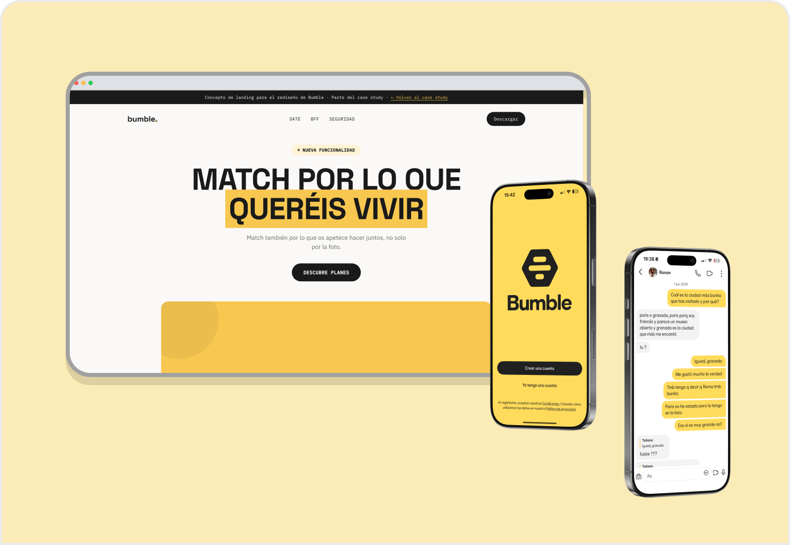
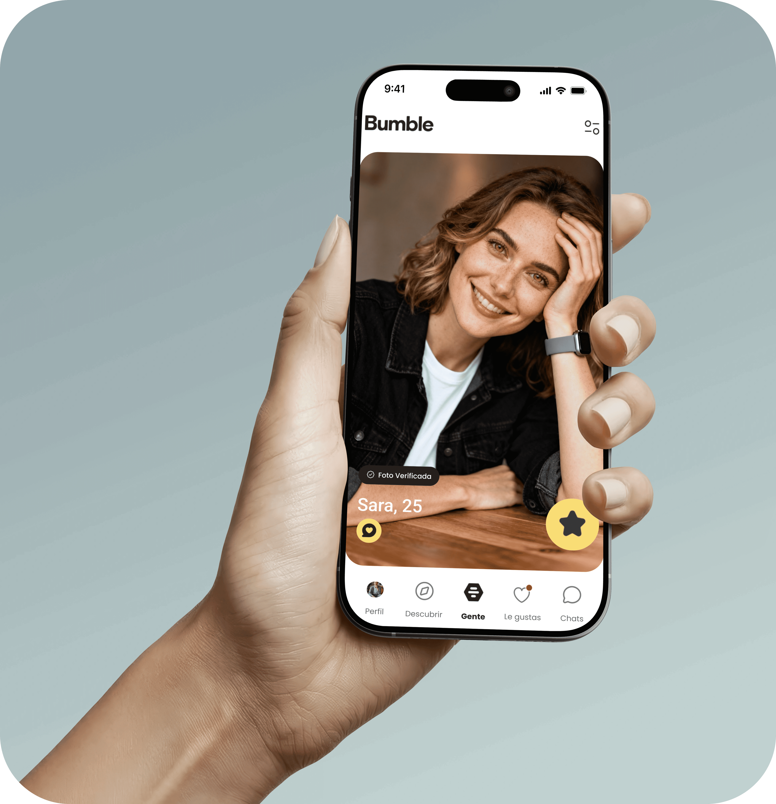

Rediseño de Bumble: del match visual al match compartido
Rediseño completo del perfil, el match, el chat y la organización de la cita en Bumble, a partir de research directo con usuarios.

Contexto
Antes de decidirme por Bumble, exploré otra dirección con una entrevista sobre YouTube, pero la persona estaba satisfecha con el producto y no había una fricción real que justificara un rediseño. En cambio, una entrevista sobre citas online sacó a la luz un problema mucho más claro y con más capas, así que decidí centrar el case study ahí.
Hice tres entrevistas en total. En todas apareció el mismo patrón: las decisiones de match se basan casi por completo en la foto, y una vez hay match, la responsabilidad de proponer y organizar la cita recae en una sola persona.
El problema
Los perfiles actuales reducen la decisión de dar like casi por completo al aspecto físico, nadie lee la bio a fondo. Y una vez hay match, organizar la cita se convierte en una carga unilateral, normalmente para el hombre, sin que haya ninguna forma compartida de decidir el plan.
Insights
De ahí salen dos lecturas: qué está fallando hoy y qué necesita resolver el diseño.
Pain points
- El like se decide casi solo por las fotos, la bio no se lee
- Toda la responsabilidad de proponer y organizar la cita recae en una sola persona
- Hay conexión en el chat que luego no se sostiene en persona
Necesidades de diseño
- El perfil debe comunicar algo más que apariencia física
- La organización de la cita debe sentirse compartida desde el match
- El match debe anticipar afinidad real, no solo interés inicial
Research
Hice tres entrevistas, dos con hombres y una con una mujer, para poder contrastar el problema desde los dos lados.
Usa Bumble por soledad, encuentra match con poca frecuencia, y siempre espera que sea el hombre quien proponga la cita.
La foto decide el like, la bio casi no se lee. Elige el lugar de la cita pensando en poder "cortar" fácil, no en lo que prefiere la otra persona.
La bio funciona como filtro negativo, no como gancho. Si el lugar propuesto no le genera confianza, directamente no va, sin explicación.
Competitive analysis
Miré Tinder y Hinge, especialmente Hinge, porque su propuesta de valor es "diseñada para ser borrada", con perfiles más ricos que solo fotos.
| Eje | Tinder | Hinge | Bumble actual | Propuesta |
|---|---|---|---|---|
| Perfil | Bio libre + fotos + intereses | Prompts obligatorios | Bio + 3 prompts + fotos | Perfil + ~3 planes destacados como elemento central |
| Señal de match | Mayormente visual | Like a foto o prompt | Visual + prompts | Afinidad de planes compartidos |
| Organizar cita | Sin estructura | Date Ideas: uno elige plan antes del match | Sin estructura, solo presión de 24h | Checkpoint de doble opt-in tras conexión en chat |
| Responsabilidad | 100% en la conversación | Sigue recayendo en quien propone | Recae en quien inicia el chat | Compartida, nadie propone unilateralmente |
Hinge lanzó en abril de 2026 la función Date Ideas, que ayuda a mostrar interés en quedar pronto, pero la organización real sigue en manos del chat.
Journey Map
El recorrido actual, sin ningún cambio, desde que alguien descubre un perfil hasta que la cita ya ha pasado. Marco en coral los puntos de fricción que salieron en las entrevistas.
Descubrir perfil
Decide el like casi solo por la foto, la bio se lee poco o actúa como filtro negativo.
Decisión rápida, poco reflexiva.
Match
Match confirmado.
Momento positivo, pero breve.
Chat inicial
Deja pasar tiempo "para ver cómo se comporta" la otra persona antes de proponer quedar.
Cansancio del mismo patrón, hola qué tal sin llegar a nada.
Proponer y organizar la cita
El hombre casi siempre propone el plan, y elige el lugar según su propia comodidad, no la de la otra persona.
Presión social en quien propone. La otra persona a veces no va si el lugar no le genera confianza, sin explicarlo.
Cita presencial
Encuentro simple, sin necesidad de ser "elaborado".
La conexión se valora según cómo fluyó el chat antes.
Después de la cita
Si hay conexión, la segunda cita se planea con más cuidado. Si no, se abandona sin más.
Si falla, sensación de responsabilidad o fallo personal.
User Flow
Cómo se conectan el perfil, los planes, el match, el chat y la cita, de principio a fin.
Diagrama construido en Miro, incrustado en directo.
Dirección de solución
Planes como señal de match: cada persona destaca unos 3 tipos de plan que le gustan en su perfil. El match no se basa solo en fotos o bio, sino en si hay solape de planes entre ambos, es bidireccional desde el inicio, no es "propongo un plan y tú lo eliges", es "a los dos nos gustan estas cosas, por eso hicimos match".
Organizar la cita como checkpoint de doble opt-in: tras cierta interacción en el chat, Bumble pregunta a los dos por separado si quieren organizar una cita. Si ambos dicen que sí, se activa. Si alguno dice que no, no pasa nada, no hay rechazo explícito ni presión unilateral.
Descarté deliberadamente la idea de ayudar con IA a mejorar fotos o el perfil, porque reforzaría el problema real, juzgar solo por el físico, en vez de resolverlo.
Test de usabilidad
Para testear esto con usuarios reales, construí un prototipo interactivo en HTML con ayuda de IA, no una pieza de producción, sino una herramienta rápida para poder observar cómo navegaba la gente de verdad. Tiene algunos fallos visuales y de flujo, priorizar velocidad de iteración sobre acabado fue una decisión consciente para poder testear antes. Puedes probarlo tú mismo/a:
Prototipo interactivo construido con IA para el test de usabilidad.
Cómo fue evolucionando
El diseño pasó por tres versiones antes de llegar a la actual, cada cambio surgió de algo concreto que salió en los tests de usabilidad, no de intuición sin contrastar.
Fase 1 — Perfil y descubrimiento
1. Buscador de planes dentro del modal de novedad
Al abrir Bumble, con cuenta ya creada, aparece un modal de novedad con un botón "Ver cómo funciona", que despliega las opciones, incluyendo el buscador de planes.

2. Posición del banner "Match de plan"
- Primera versión: abajo
- Segunda versión: arriba
- Tercera versión: vuelve abajo, consistente con dónde Bumble ya muestra sus notificaciones de coincidencias
En el test de usabilidad, ninguna de las dos posiciones anteriores resolvía el problema, la gente seguía sin notar el banner antes de dar like.

3. Card "Match de plan" dentro del perfil
No existía en la primera ni en la segunda versión, se añadió en la tercera al observar, en los tests, que la gente sí se detenía a mirar el perfil completo antes de decidir.

Fase 2 — Chat
4. Disparador del modal en el chat
- Primeras versiones: aparecía nada más entrar al chat
- Versión final: aparece tras cierta cantidad de mensajes
En el test, varios testers comentaron que sentían que se les proponía un plan antes incluso de conocerse.

5. Modal tipo bottom sheet, no pantalla completa
Sigue el patrón visual que ya tiene Bumble para sus propios modales, priorizando la consistencia con la app existente sobre una solución de diseño propia.

6. Cambio de copy del tercer botón, de "Ahora no" a "Prefiero seguir hablando"
A raíz del test, varios testers interpretaron "Ahora no" como un rechazo, alguno llegó a pensar que eso borraría el chat.

7. Confirmación de match mutuo dentro del chat
No existía en las primeras versiones. En los tests, la gente no se daba cuenta de que, tras el "me apunto" de ambos, ya podían organizar el plan libremente.

UI
1. Color
Bumble no tiene ningún tono verde en su paleta de marca, así que introducir uno nuevo tenía que estar justificado por una necesidad funcional, no por preferencia estética.

2. Tipografía
Bumble Sans, la tipografía de la marca, es un asset privado. Elegí Poppins como alternativa pública, no por parecido superficial, sino por compartir la misma geometría redondeada que le da su personalidad cercana.

3. Design system y componentes
En vez de partir de un kit genérico, construí los componentes específicos de este rediseño, el banner de match, los chips de planes, y los estados del modal de doble opt-in.

Prueba el prototipo final

Conoce a Pedro
Sobre él
Diseñador gráfico freelance. Lleva un año soltero y se ha bajado Bumble porque está cansado de que sus planes de fin de semana sean siempre con la misma gente de siempre.
Sus intereses
No busca match, o eso dice, busca a alguien con quien de verdad le apetezca hacer algo, sin quedarse en el "hola, qué tal" de siempre.
Sus gustos
Resultado
- El diseño final se validó con 2 sesiones adicionales de test, sobre la versión ya iterada tras los hallazgos anteriores
- El objetivo principal, que el concepto de match por planes y el checkpoint de doble opt-in se entendieran sin explicación previa, se cumplió en ambos casos
- Los comentarios fueron positivos en general
- Quedan algunos ajustes menores por definir, ninguno que comprometa la dirección de la solución, sino puntos de refinamiento propios de seguir iterando
Aprendizajes
- Esperaba que la disponibilidad de la gente fuera el mayor obstáculo del testing, y lo fue, pero sorprendió lo rápido que se entendía el concepto general. El reto real estuvo en el flujo, no en la idea de fondo.
- Estaba segura de que "Ahora no" se leería como neutro, y el test demostró lo contrario, generaba dudas sobre si rompía el match. Confirmó que la intuición de diseño necesita contrastarse con datos, por bien fundamentada que parezca.
- Explicar un concepto nuevo a alguien con un modelo mental ya fijo de Bumble fue lo más difícil, incluso para mí. Pero en las pruebas, la gente llegaba sola a entender para qué servía, señal de que el diseño comunicaba por sí solo.
- Sentí que dejé de diseñar pantallas y empecé a diseñar el problema real en la fase 2, cuando una persona propone el plan y la otra lo recibe, ahí se juega la carga emocional que motivó todo el rediseño. Una entrevista lo confirmó, incluso sin depender de la foto al inicio, esta vuelve a pesar conforme avanza la conversación.
- De cara a seguir prototipando con IA, quiero ser más estructurada, decidir de antemano qué es fijo y qué queda abierto a experimentar, en vez de resolverlo sobre la marcha. Lo mismo con la organización de archivos y frames en Figma.